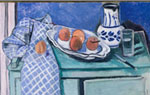
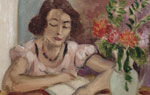
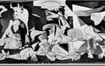
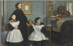

정 물  초록색 찬장이 있는 정물 많은 인상주의 화가 중에서도 ‘현대 미술의 아버지’라고 불리는 세잔의 그림을 연상시킨다. sadasda  독서하는 여인 남성을 통해서가 아니라 책을 통해 직접 세상과 소통하고 지식을 받아들이는 자율적 존재가 된 여성의 지위 변화를 반영한 것으로 볼 수 있다. sadasda
게르니카  게르니카 그림에는 부상당한 사람들과 절규하는 사람들 등이 그려져 있으며, 전쟁의 참상을 알려주는 작품이다. sadasda  벨렐리가족 인상주의 화가 에드가 드가(Edgar Degas, 1834-1917) 이 그림은 드가가 아버지를 여의고 방문한 고모의 집을 배경으로 하고 있다. sadasda